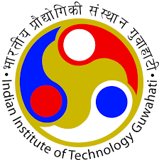
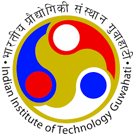

I’m Subhabrata — bridging code, business & product
Developer → MBA → Programme & Product Leader. I turn complex engineering into useful products.
Developer → MBA → Programme & Product Leader. I turn complex engineering into useful products.
I didn’t start my career with Gantt charts. I began as a developer, which means I understand technology at its core and can empathize with engineers who bring products to life. Later, I earned my MBA and worked as a Business Analyst, giving me a strong foundation in business strategy and a deep appreciation of the user mindset.
Over the years, I’ve delivered projects in both Waterfall and Agile frameworks, building versatility in managing diverse teams and adapting approaches to fit the challenge. My career spans telecom, infotainment, RPA, product development, infrastructure, banking, and finance — proof that I am domain agnostic and quick to adapt.
I’ve never shied away from wearing different hats. Reinvention has been my compass, whether through stepping into new roles, leading change, or pursuing knowledge. Along this journey, I’ve earned PMP, PMI-ACP, PSM-I, PSPO-I, SAFe Agilist, ICP-ACC, and AWS certifications — which have sharpened my skills and helped me grow. Today, I am pursuing the Executive Program in Product Management at IIT Guwahati, preparing myself for a leadership future in product management.
Developer empathy · deep system insight.
10+ years coding backgroundMBA + BA experience · aligning business and UX.
Built solutions for 5M+ usersAgile, Scrum, Waterfall across domains.
20+ cross-domain programs


 

Portfolio programs delivered across global teams
Improved delivery velocity while reducing risks by 18%
Annual savings via cost & process optimization
Let’s talk product leadership.
Download Resume Contact Me